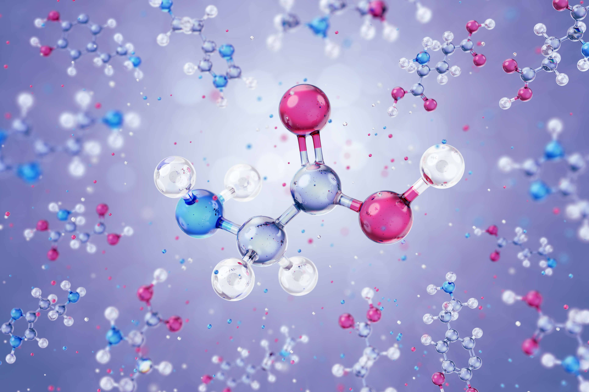

Exemplo do Cotidiano
Os aminoácidos se unem em sequências, formando cadeias. Essas cadeias se dobram e adquirem estruturas específicas, originando as proteínas. A sequência e o tipo de aminoácidos influenciam a forma e a função da proteína formada.

Os aminoácidos são moléculas orgânicas que funcionam como as unidades básicas que formam as proteínas. Eles são compostos principalmente por carbono, hidrogênio, oxigênio e nitrogênio. Existem diferentes tipos de aminoácidos, e a combinação entre eles determina a estrutura e a função de cada proteína.

Os aminoácidos se unem em sequências, formando cadeias. Essas cadeias se dobram e adquirem estruturas específicas, originando as proteínas. A sequência e o tipo de aminoácidos influenciam a forma e a função da proteína formada.
Os aminoácidos se unem em sequências, formando cadeias. Essas cadeias se dobram e adquirem estruturas específicas, originando as proteínas. A sequência e o tipo de aminoácidos influenciam a forma e a função da proteína formada.
Função estrutural: ajudam a formar e dar resistência aos tecidos do corpo. Exemplo: o colágeno presente na pele e nos tendões.
Função de defesa: os anticorpos são proteínas que ajudam o organismo a reconhecer e combater agentes causadores de doenças.
Os aminoácidos se unem em sequências, formando cadeias. Essas cadeias se dobram e adquirem estruturas específicas, originando as proteínas. A sequência e o tipo de aminoácidos influenciam a forma e a função da proteína formada.
Curiosidades sobre Aminoácidos e Proteínas!
As proteínas e os aminoácidos funcionam como um verdadeiro "alfabeto da vida". A curiosidade mais fascinante é que existem apenas 20 aminoácidos padrão na natureza que o nosso corpo usa para construir proteínas. No entanto, combinando essas "20 letras" em diferentes ordens e tamanhos, o corpo humano consegue formar mais de 100 mil tipos diferentes de proteínas, cada uma com uma função única — desde transportar oxigênio no sangue até dar estrutura aos nossos músculos, cabelos e unhas.
Fonte: Biologia Molecular da Célula (Alberts et al.)